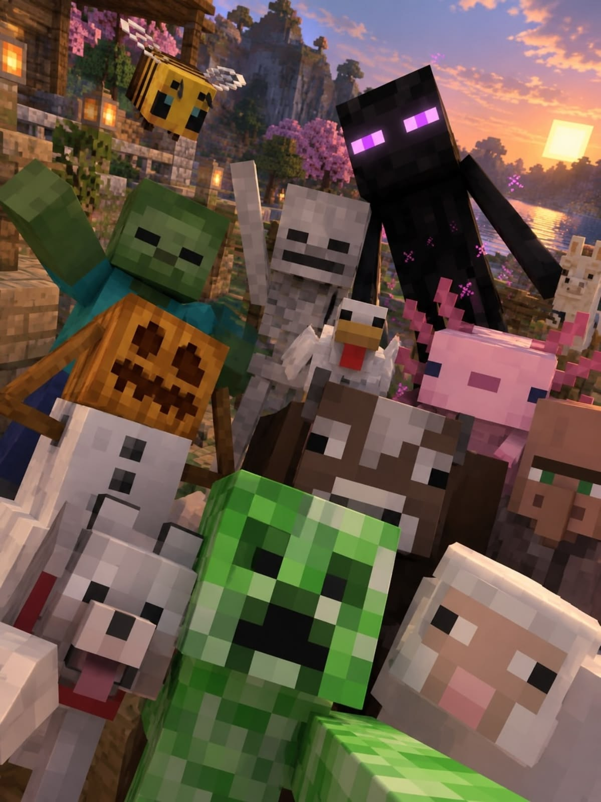
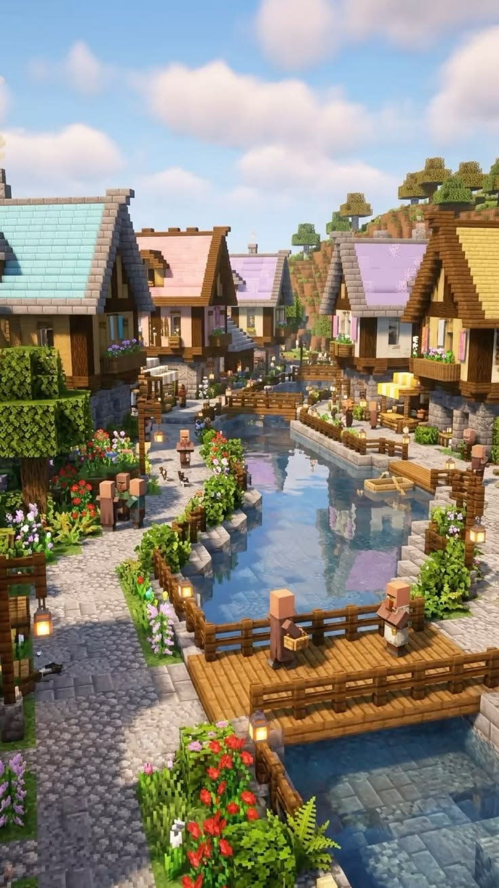

Sample Blog Post
Posted on October 3, 2026 by Shaun Davis

Minecraft allows you to create your own world, then build,
explore and conquer. When night falls the monsters appear,
so be sure to build a shelter before they arrive. The world
is only limited by your imagination!
Minecraft is a sandbox video game developed by Mojang
Studios. The game was created and designed by Markus
"Notch" Persson in the Java programming language.
Following several early private testing versions, it was
first made public in May 2009 before fully releasing in
November 2011, with Jens Bergensten then taking over
development. Minecraft has since been ported to several
other platforms and is one of the best-selling video
games of all time.
Another Blog Post
Posted on October 10, 2026 by Shaun Davis

Minecraft is basically a giant digital sandbox where your
imagination is the only real limit. With a world made
entirely of blocks, you can start with something simple
like a cozy dirt hut and end up constructing sprawling
castles, working roller coasters, or even full-scale
replicas of real-world cities.
There's no required path or "right" way to play, so
whether you're a perfectionist who plans every brick or
someone who just stacks blocks until something cool
appears, the game lets you create whatever you can dream
up.
The game also has a strong community aspect, with players
sharing their creations online and collaborating on
massive projects. Whether you're into survival mode or
creative mode, Minecraft offers a unique experience that
caters to many different types of players.